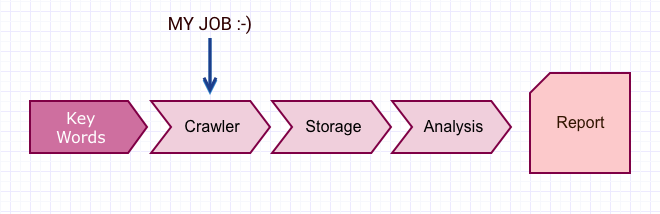
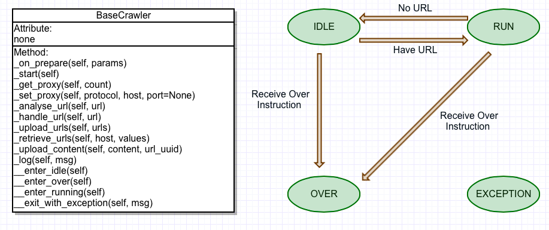

crawler system
project info
Individual Project
project duration
2015/10 - 2016/02
my role
Website Design
skills employed
HTML/CSS
Javascript
BACK TO TOP
description
The crawler system is a part of the public opinion monitoring system. This system uses the information in websites to analysis people's sentiment. I am responsible for designing crawlers to crawl the information from mainstream medias' websites.
system architecture
We design and achieve distributed crawler so that it can efficiently and rapidly collect and obtain the corpus of topics .

crawler design

THE END
Xiyun's Blog Beauty Diary